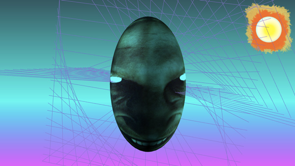

This is a tutorial on a small part of an existing code base. If your experience with JavaScript is not jaded enough to skim through the source, fear not. You will be able to learn some advanced topics about how 3d and realtime chat works. If you still find this confusing after, I accept that I probably could have explained better. Maybe I will add more pictures with sounds later.
First, clone the git repo at https://github.com/ednapiranha/3slacker. Follow the instructions in the README.md file.
When you view the project in your browser, you will see something like the video below. Hover over the video to see the key elements we'll be talking about.
pulsating head
rotating gridlines
gradient background
subtle lighting
This is just plain CSS. You can see the code in the file public/css/main.css
body {
font-family: 'Source Code Pro';
background: linear-gradient(#2a5961 0%, #19fbf3 60%, #f82cff 100%);
background-attachment: fixed;
}Open up public/js/face.js. You will see that this is separated into some key parts: initialization, setup and functions for re-rendering objects. Right now, we're focusing on the setup portion of the 3D code. Search, and you'll find a function called drawGrids() and another one right after called rotate(). drawGrids() will set up the gridlines and rotate() will ensure they keep moving when re-rendering happens.
// These are gridlines we add around the face.
function drawGrids() {
let size = 50;
let step = 4;
let geometry = new THREE.Geometry();
for (let i = -size; i <= size; i += step) {
geometry.vertices.push(new THREE.Vector3(-size, 0, i));
geometry.vertices.push(new THREE.Vector3(-i, 0, size));
geometry.vertices.push(new THREE.Vector3(i, 0, -size));
geometry.vertices.push(new THREE.Vector3(0, size, -i));
geometry.vertices.push(new THREE.Vector3(0, -size, i));
geometry.vertices.push(new THREE.Vector3(0, i, size));
geometry.vertices.push(new THREE.Vector3(0, i, -size));
}
let material = new THREE.LineDashedMaterial({
color: '#8f69d1',
dashSize: 15,
gapSize: 5
});
line = new THREE.LineSegments(geometry, material);
scene.add(line);
}// This sets up the rotation speed for the gridlines.
function rotate() {
line.rotation.x += SPEED * 1.8;
line.rotation.y += SPEED;
line.rotation.z += SPEED * 1.2;
};If you don't put in lighting, things will be really dark and not as fun. In the same file, search for setLighting() to see how that is initialized.
// Set up all the lighting in the room for the objects.
function setLighting() {
let directionalLight = new THREE.DirectionalLight(LIGHTING, LIGHT_OPACITY);
directionalLight.position.set(1, 1, 1);
scene.add(directionalLight);
directionalLight = new THREE.DirectionalLight(LIGHTING, LIGHT_OPACITY);
directionalLight.position.set(-1, -1, -1);
scene.add(directionalLight);
directionalLight = new THREE.DirectionalLight(LIGHTING, LIGHT_OPACITY);
directionalLight.position.set(0, 0, -1);
scene.add(directionalLight);
directionalLight = new THREE.DirectionalLight(LIGHTING, LIGHT_OPACITY);
directionalLight.position.set(0, 0, 1);
scene.add(directionalLight);
}Here comes the fun part. We need to create a 3D sphere and plaster an image of Richard D. James (Aphex Twin) on top of it. Because who wouldn't want a bot of creepy Aphex Twin? In the samem file, search for new THREE.TextureLoader() located within exports.generate. This loads up the image from your server and passes it to addFace(texture). You have to wait until it loads or else addFace might run before the texture is ready. Such is JavaScript.
// We need to wait until the image loads so that we can apply it as a texture. The image path is
// the path relative to the root of the project. In this case it would be the build/ directory.
exports.generate = function () {
let loader = new THREE.TextureLoader();
loader.load('aphextwin.png', function (texture) {
... other code here we'll talk about later ...
addFace(texture);
...
});
};
// This is where we create the face for our bot and apply the image texture.
function addFace(texture) {
let geometry = new THREE.SphereGeometry(18, 24, 32);
let material = new THREE.MeshPhongMaterial({
color: '#1eecff',
reflectivity: 15,
shininess: 11,
map: texture
});
mesh = new THREE.Mesh(geometry, material);
mesh.scale.y = 1.8; // This makes the sphere longer so it's more face-like
scene.add(mesh);
};// We want the face to pulsate so it looks like it's breathing. We increase the scales
// until it reaches a maximum and then we reverse the action until it reaches the minimum.
function pulsate() {
if (mesh.scale.z > 1.1) {
increase = false;
}
if (mesh.scale.z < 1) {
increase = true
}
if (increase) {
mesh.scale.z += 0.001;
mesh.scale.x += 0.001;
} else {
mesh.scale.z -= 0.001;
mesh.scale.x -= 0.001;
}
}And there you have it - a basic ThreeJS bobblehead bot of Aphex Twin. Or whatever texture you want to use in your bot. Now for the Slack portion of it.
Before you can interact with Slack or Open Weather or any other service, you'll need to sign up on their sites to get a token. For Slack, create a new bot at https://my.slack.com/services/new/bot and save that token in config.json.
I also set one up for weather reports, so if you want to do the same, sign up for a token at http://openweathermap.org/appid. Once you added both tokens, save the file and restart your node project.
{
"domain": "localhost",
"port": 3000,
"analytics": false,
"externalDomain": "http://localhost:3000",
"slackKey": "<YOUR SLACK TOKEN HERE>",
"openWeatherKey": "<YOUR OPEN WEATHER TOKEN HERE>"
}Before someone tries to tell me you can do this all client-side and not need a server, yes that is true, but I did it this way so deal with it. And no, I am not going to rewrite this in yet another JavaScript framework - but YOU can if YOU are feeling up to it. Now that we have that situation sorted out, let's talk about how we send messages from Slack and Open Weather back and forth to the bot.
We have two main parts: the web socket that sends data between the server and the client and the actions that talk to the external APIs. In the Slack messages, I have two main checks - one to see if the message was directed to the bot specifically (for the weather report) and one to see if anyone laughed. You can view it in slacker/messages.js.
// This checks what kind of response to send depending on the regex we want to look for.
function sendResponse(data) {
// Let's return a response back to the client if someone in the same channel as the bot says "lol" or
// "looool" or "LOOOOOOOOOOL" or any variant of that, or haha or hehe or HAHAHA or HEHEHEHE, etc.
if (data.text.match(/(lo{1,}l|haha|hehe)/gi)) {
sockets.emit('message', 'HAHAHAHAHHAHAHAHAHAHAHA!');
return;
}
// Let's return a weather status for a particular zip code in the United States.
if (data.text.match(/3slacker/gi) || data.text.indexOf('@' + uid) > -1) {
if (data.text.match(/weather [0-9]+$/i)) {
weather.getWeather(data, rtm, sockets);
}
}Let's say someone wrote "lol" on the Slack channel where the bot is. What our code will do is see that it is a match, and return a big laughing response on our page, instead of annoying the users on Slack with useless text.
In public/js/main.js we listen for the incoming socket 'message' to write our resposne on the page and fade it in.
// Incoming messages are appended into the page.
socket.on('message', (data) => {
let div = document.createElement('div');
div.classList.add('message');
let p = document.createElement('p');
p.textContent = data;
div.appendChild(p);
div.classList.add('on');
wrapper.appendChild(div);
});Fading in is done via CSS in public/css/main.css.
.message {
opacity: 0;
height: 0;
width: 0;
transition: all 1s;
-webkit-transition: all 1s;
padding: 10px;
}
.message.on {
opacity: 1;
height: auto;
width: auto;
transition: all 1s;
-webkit-transition: all 1s;
}
Now let's say someone wrote "3slacker: weather 90210" or "@3slacker weather 90210" to get the weather report for Beverly Hills, California (in all likeliness, we never have to wonder what the weather report there is, because it's probably clear and sunny 99% of the time).
What we need to do is pass the zip code to the Open Weather API and have them return us the weather code and we try to match an appropriate image for that status. In this app, I've simplified it to clear, rain, clouds, snow. After sendResponse(data) is called from slacker/messages.js and matches the weather keyword, we pass it off to slacker/weather.js to process. rtm.sendMessage will send it back as a response in the Slack channel.
// Send a request to Open Weather's API and return both a status to the client and also a message to
// the Slack channel.
exports.getWeather = function (data, rtm, sockets) {
let zip = data.text.split('weather ')[1];
request('http://api.openweathermap.org/data/2.5/weather?zip=' + zip + ',us' +
'&APPID=' + nconf.get('openWeatherKey'), (err, response, body) => {
if (!err && response.statusCode === 200) {
let weather = JSON.parse(body).weather[0];
setWeather(weather.id, sockets);
rtm.sendMessage('Weather for ' + zip + ' is ' + weather.main, data.channel);
} else {
rtm.sendMessage('Error retrieving weather report', data.channel);
}
});
};// Weather conditions taken from http://openweathermap.org/weather-conditions
function setWeather(id, sockets) {
switch (id) {
case 500:
case 501:
case 502:
case 503:
case 504:
case 511:
case 520:
case 521:
case 522:
case 531:
sockets.emit('weather', 'rain');
break;
case 600:
case 601:
case 602:
case 611:
case 612:
case 615:
case 616:
case 620:
case 621:
case 622:
sockets.emit('weather', 'snow');
break;
case 801:
case 802:
case 803:
case 804:
sockets.emit('weather', 'clouds');
break;
case 800:
sockets.emit('weather', 'clear');
break;
default:
break;
}
};Now that we have the weather status, we can send a weather message back to the client-side. Open up public/js/main.js to see where it receives it and applies it into the page.
// Incoming weather statuses are matched by their respective images located in build/weather/.
socket.on('weather', (data) => {
weather.classList.remove('on');
setTimeout(() => {
weather.src = '/weather/' + data + '.png';
weather.classList.add('on');
}, 1000);
});And finally, you get a sunny report for 90210:
There you have it. A ThreeJS Slack bot. Rather, the beginnings of one. What else do you think you could do to make it even more weird?